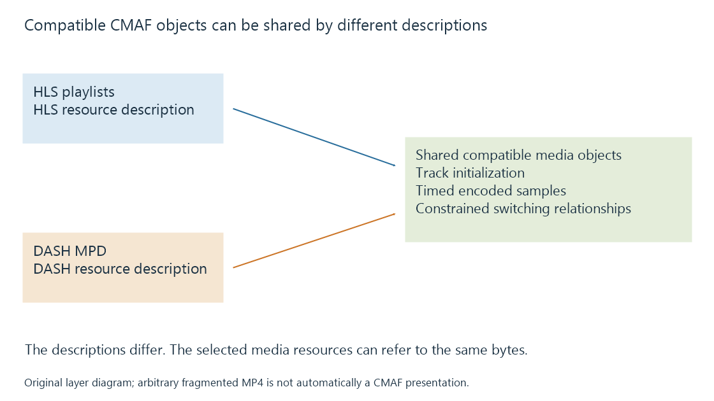

Common Media Application Format (CMAF)
CMAF constrains segmented media tracks and their relationships so compatible delivery systems can use shared addressable media objects for timed presentation and switching.
Common Media Application Format, or CMAF, defines constrained segmented media tracks and how suitable tracks form a presentation. It builds on the ISO Base Media File Format, adding relationships intended for interoperable delivery, decoding and switching.
CMAF does not itself define the playlist, player or delivery protocol. That separation allows a delivery system to describe compatible media using HLS or DASH.
Shared media, different descriptions
A publisher can create compatible CMAF media objects and describe them in both HLS playlists and a DASH MPD. The descriptions remain different, while the addressable media resources can be shared.

For a service offering both delivery systems, this can avoid keeping two separate copies of identically encoded and packaged media.
The shared objects must actually satisfy the relevant constraints. Matching filename extensions does not establish that two independently packaged outputs are interchangeable.
| Layer | What it supplies |
|---|---|
| Encoded video or audio | Compressed pictures or samples |
| CMAF track and media objects | Constrained packaging, timing and track relationships |
| HLS playlist or DASH MPD | Resource discovery and presentation information |
| Player | Selection, retrieval, preparation and presentation |
This explains why “CMAF support” is not a complete compatibility statement. The receiver still needs the actual encoding configuration, delivery description and other selected features.
A switching set coordinates alternatives
Alternative encodings intended for seamless switching need compatible boundaries and timeline relationships. CMAF defines constraints and profiles for tracks, switching sets and presentations.
An original example has two video alternatives covering the same intervals, one at 720p and one at 1080p. If both have a suitable switching boundary at programme second twelve, the player can continue with the other alternative from that moment.
If one alternative instead has a usable boundary at thirteen, describing it as another quality does not create the missing second. The track relationship must be established during encoding and packaging.
A fragment is not a synonym for a complete movie. Track initialization describes how later samples are interpreted. Timed media objects then supply those samples, and the delivery description relates them to the presentation.
Chunks can become available before a longer interval is complete
Lower-latency delivery can make smaller units available while a larger media interval is still being produced. A player capable of incremental receipt and preparation can work closer to the live publication edge.
CMAF chunks provide a media organization that such delivery can use. The delivery protocol must also expose availability early enough, and intermediaries must avoid holding all bytes until the larger object completes.
A six-second interval divided into twelve half-second units does not by itself promise half-second end-to-end delay. Encoding, publication, transfer, buffer policy and rendering contribute their own delays. Low-latency streaming works through that distinction.
Identify the constraints behind the label
An ordinary fragmented MP4 already has initialization and fragment structure. CMAF adds specific constraints, media profiles, brands and cross-track relationships; arbitrary fragmented output is not automatically a conforming CMAF presentation.
ISO/IEC 23000-19:2024 is the published base edition referenced here. Its media and presentation constraints give the CMAF label a more specific meaning than fragmented MP4 alone.
See Also
- HLS media segments and initialization
- MPEG-DASH and its media presentation description
- Adaptive bitrate streaming and representation selection
- Low-latency streaming and the live presentation delay
- Media Source Extensions (MSE) and scripted media delivery